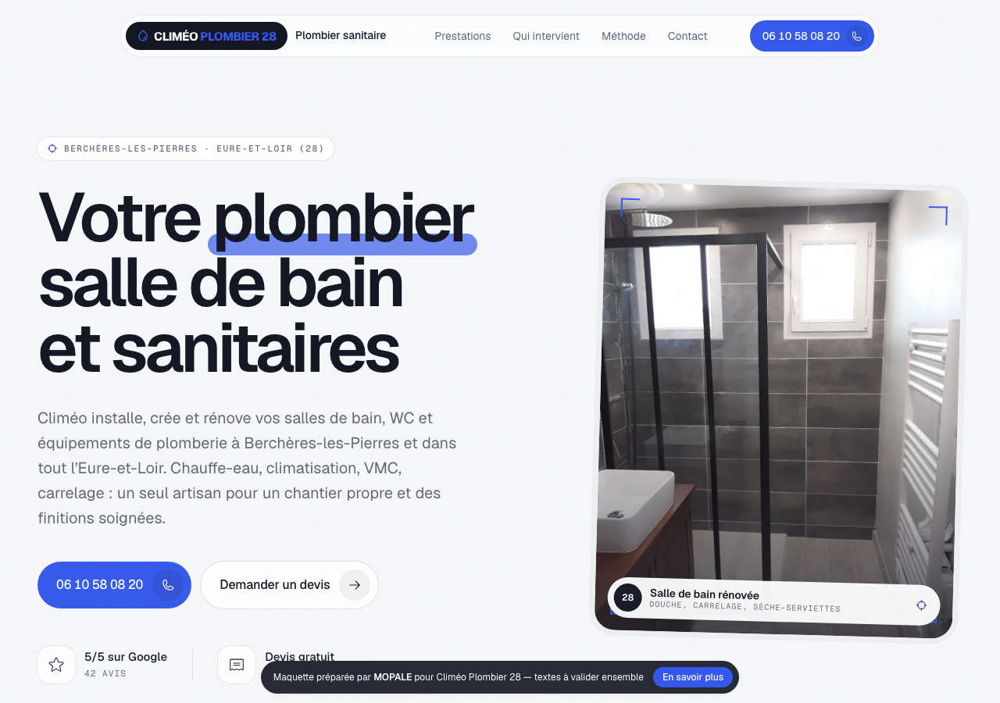

Climéo Plombier 28 Chauffage-PAC · Berchères-les-Pierres (28630)
06 10 58 08 20 · 42 avis 5 · 5 photos · registre non · statut à appeler · aucun-site / bonne-repu / mal-classe
SMS Bonjour, Alexandre de l'agence MOPALE à Chartres. J'ai préparé une maquette de site pour Climéo Plombier 28, à partir de votre fiche Google et de vos photos de chantiers. Vous pouvez la regarder ici : https://rosenaal.github.io/mopal-apercus/climeo-plombier-28/. Rien à payer pour regarder. Alexandre, MOPALE
À vérifier (9)
- Devis gratuit : mentionné sur la carte de visite (photo 0), à confirmer.
- Chauffe-eau, climatisation et VMC : listés sur la carte de visite, pas attestés par les avis.
- Dépannage de plomberie : mentionné sur la carte de visite, à confirmer avec l'artisan.
- WC suspendu avec bâti-support : déduit de la photo 4, à confirmer.
- Carrelage et crédences de cuisine : attestés par un avis et la carte de visite, périmètre exact à préciser.
- Niche « Chauffage-PAC » du lead : aucune pompe à chaleur ni chauffage central attesté, volontairement non mentionnés.
- Clientèle de particuliers uniquement : déduit des avis, à confirmer.
- Zone d'intervention : tout l'Eure-et-Loir, à confirmer avec l'artisan.
- L'adresse e-mail visible sur la carte de visite n'a pas été reprise (absente du brief).